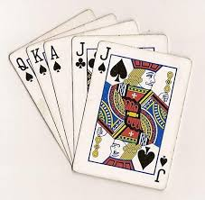

Introduction: Poker is a popular card game that combines skill, strategy, and luck. It is played in various forms around the world and is a staple in both casual and competitive settings.
History: Poker's origins date back to the early 19th century in the United States. It evolved from earlier games of chance played in Europe and Persia, and it quickly gained popularity in the American frontier.
Gameplay Mechanics: Poker is typically played with a standard 52-card deck. The objective is to win chips by having the best hand or by convincing other players to fold. Players are dealt two cards (hole cards) and use five community cards to make the best possible five-card hand.
Memorable Moments: Poker has seen many memorable moments, such as Chris Moneymaker's 2003 World Series of Poker (WSOP) Main Event win, which sparked the poker boom of the early 2000s.
Key Players: Renowned poker players include Doyle Brunson, Phil Ivey, and Daniel Negreanu, each of whom has made significant contributions to the game and has a storied career in professional poker.
Important Tournaments: Major tournaments like the WSOP, World Poker Tour (WPT), and European Poker Tour (EPT) have significantly contributed to the popularity and prestige of the game.
Equipment Needed: To start playing poker, you need a standard 52-card deck and poker chips. Additionally, a table and dealer are typically used in formal settings.
Basic Strategies: Here are some basic strategies to help you get started:
Beginner Tips: As a beginner, focus on playing tight and aggressive. Avoid playing too many hands and be selective with your bluffs. Practice regularly and learn from more experienced players.